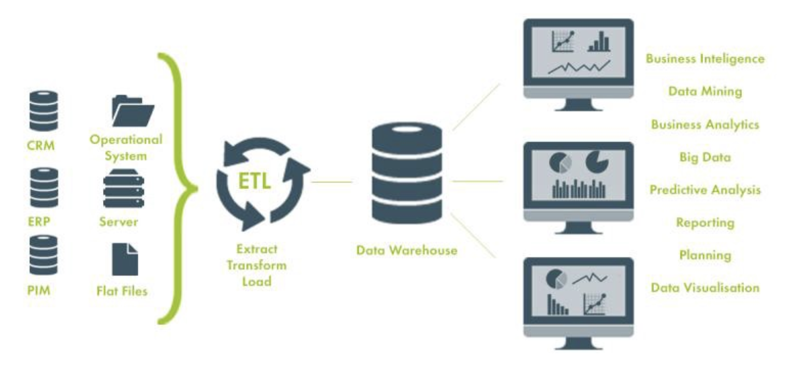

Introduction
When we think about data science, the first things that come to mind are machine learning models, predictive analytics, and visualizations that turn raw numbers into actionable insights. The tool you usually thinks of is Jupyter Notebook. How about you want to work smoothly in a scalable and team solution, here is the solution comes in: data engineering. Without it, even the best data science team is likely to stumble. In this blog, we’ll explore why data engineering is vital to data science, what happens when it’s absent, and how organization can optimize their workflows by investing in it.
What is Data Engineering?
Data engineering involves building and maintaining the infrastructure that allows data to flow seamlessly from raw sources to analytical insights. It encompasses:
- Data pipelines: Automating the extraction, transformation, and loading (as known as ETL) of data, from different kinds of data sources.
- Storage systems: Designing scalable databases, data warehouses, and data lake, depends on data sizes, frequencies of usage, and latencies.
- Data governance: Ensuring data is clean, consistent, and accessible. GDPR compliant enforced.
- Automation: Creating workflows and dependencies to minimize manual intervention.
Why Data Engineering is Crucial for Data Science
1. Scalability Across Projects
Data engineering provides a centralized system that scales effortlessly across multiple projects. Without it, each data science project might involve ad-hoc solutions to acquire and clean data, leading to inefficiencies and duplication of work.
Imagine a retail company with multiple teams working on sales forecasting, inventory optimization, and customer churn prediction. Without a robust data engineering layer, these teams might independently extract and preprocess data, creating silos and inconsistencies.
2. Minimizing Redundant Workloads
Data engineering eliminates redundant tasks by creating reusable pipelines and standardized datasets. This allows data scientists to focus on analysis and modeling rather than spending 60-80% of their time wrangling messy data. This can saves times by remove redundant works of each others.
3. Reliable Data Access (Single Point of Truth)
Well-designed data engineering ensures that data is: - Available in different latencies requirements, balancing the system cost budgets. - Consistent across systems and projects. - Secure and governed to meet regulatory requirements.
This reliability builds trust in the data and accelerates decision-making processes.
The Consequences of Neglecting Data Engineering
What happens if data engineering is absent? Here are some common issues:
Inconsistent Data: Teams may work with different versions of the same dataset, leading to conflicting insights. Metric definitions may be defined by different teams, and makes different interpretations.
Project Delays: Without automated pipelines, data scientists spend excessive time cleaning and preparing data.
Scalability Issues: Ad-hoc solutions may work for small projects but crumble under the weight of larger datasets or more complex requirements.
Collaboration Bottlenecks: Siloed workflows make it hard for teams to share insights or replicate analyses.
Tech Stack Comparison: With vs. Without Data Engineering
Let’s visualize the difference:
Without Data Engineering
- Raw data directly consumed by data science teams.
- Manual cleaning and preprocessing for each project.
- Tools: Basic spreadsheets, isolated SQL scripts, manual Python/R workflows.
With Data Engineering
- Centralized data pipelines feeding into a shared data warehouse.
- Automated ETL processes ensure consistent and clean data.
- Tools: Apache Airflow, Apache Kafka, Snowflake, Databricks.
Below is an example of system flow with data engineering:

Structuring Data Engineering and Data Science Teams
Clear Roles and Responsibilities
- Data Engineering Team: Focuses on building and maintaining data pipelines, databases, and governance frameworks.
- Data Science Team: Consumes the cleaned and structured data to develop models and generate insights.
Best Practices for Collaboration
Define Interfaces: Clearly specify the datasets, schemas, and access methods that data engineering will provide to data science.
Frequent Communication: Establish regular touchpoints to align priorities and resolve issues.
Shared Documentation: Maintain a centralized repository of data dictionaries, pipeline workflows, and system designs.
Agile Practices: Use iterative development methods to ensure that data engineering evolves alongside the changing needs of data science.
Key Takeaways and Recommendations
Invest in Data Engineering Early: Organizations should prioritize building a solid data engineering foundation before scaling their data science teams.
Adopt Modern Tools: Leverage tools like Apache Kafka, Snowflake, and Airflow to automate and scale data workflows.
Foster Collaboration: Promote cross-functional collaboration to align data engineering and data science goals.
Monitor and Evolve: Continuously monitor pipelines and workflows to ensure they meet the organization’s growing demands.
Conclusion
Data science may grab the headlines, but data engineering is the backbone that makes it all possible. By investing in robust data engineering practices, organizations can unlock the full potential of their data science initiatives, enabling faster insights, scalable workflows, and sustainable growth. If you’re a professional curious about optimizing your organization’s analytics capabilities, start with data engineering—because even the best models can’t run on broken foundations.
What are your thoughts on the role of data engineering in data science? Let’s discuss in the comments below!